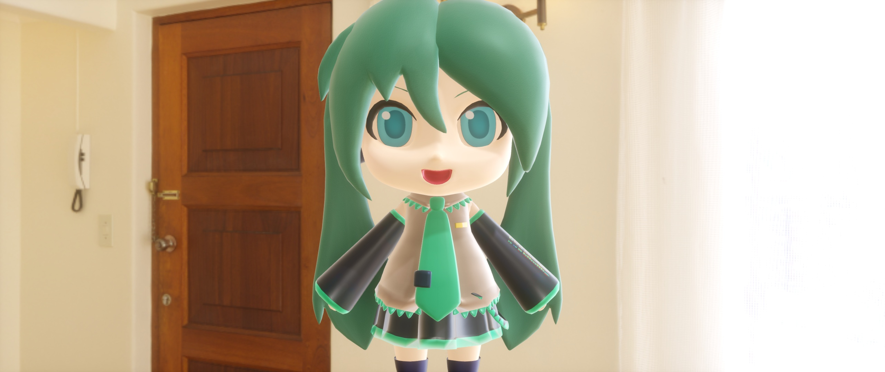
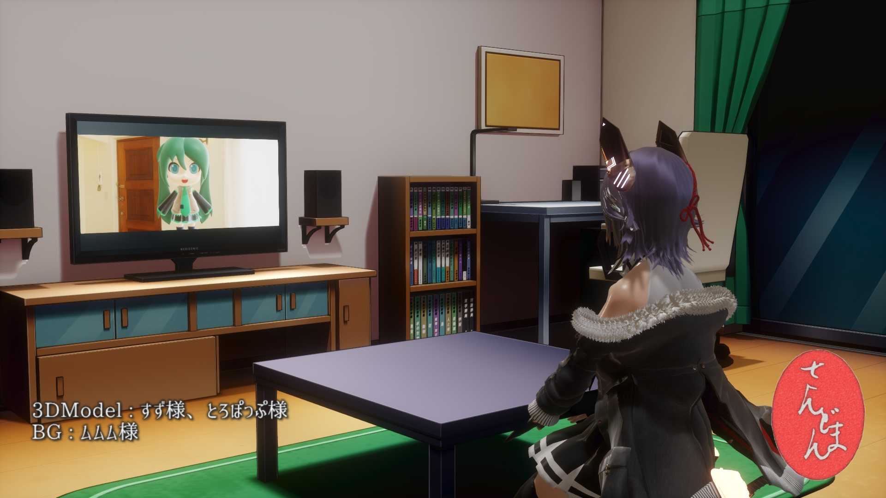

{kind=link}

→ →
→
{kind=link}

お借りした作品 … 天龍改二：とろぽっぷ様、ミクダヨー：すず様、シンプルルーム：ムムム様
Version 3.50より、シネマティックなルックには欠かせない、アナモルフィックレンズで撮ったような絵を作るためのポストエフェクト群が追加されましたので、その使用法についての文書です。僕には映画鑑賞の趣味は無いし、カメラについても全くの素人であり、ちょっとネットで読みかじった程度の知識を元に作っていますから、あんまり大層な事は書けないんですが、なんとか観察力の及ぶ範囲で頑張ってみました。
以下の文書は既に何度かsdPBRを使って絵作りをやったことのある人向けの解説になりますから、それを踏まえてゆっくり読んでください。
映画に特徴的な没入感の有る、横に長いシネスコサイズの広い画角を持った絵はこれまで、(そして今でも一部では)アナモルフィックレンズと言う特殊なレンズシステムを用いて撮影されてきました。
アナモルフィックレンズとは絵を横方向に圧縮するレンズシステムであり、映画用フィルムとして主流だった35mmフィルムを使って画角の広い、没入感の有る絵を記録するための物でした。上映時には逆に横方向に伸長する作用の有るアナモルフィックレンズを使った映写機を使う事で、映画館のスクリーンに迫力ある映像を届ける事が出来たのです。
 
→
お借りした作品 … 天龍改二：とろぽっぷ様、ミクダヨー：すず様、シンプルルーム：ムムム様
そんなアナモルフィックレンズなんですが、一般的なカメラに使われる球面レンズで撮った場合とでは幾分違ったテイストの絵が撮れる事でも知られており、シネマティックな雰囲気、というのはアナモルフィックレンズの特性に由来すると言っても過言ではないように思えます(個人の意見です)
具体的にアナモルフィックレンズではどのように撮った絵に特徴が出るかと言う事で、以下に列記しました。今は全部読まなくても大丈夫ですが、それぞれの雰囲気を出すためのエフェクトを頑張ってこしらえたのです。
最近ではデジタルでの撮影・上映が当たり前になり、もはやアナログのフィルムサイズなどには縛られませんから、通常の球面レンズを使って撮った上で適切なカラーグレーディングや、上下をカットするレターボクシングなどを施して欲しい絵作りをするのも当たり前になったようですが、それでもなおアナモルフィックレンズは「映画のような絵」を作るための有力な選択肢として一定のポジションを占めています。乱暴な言い方をすると大体の映画はアナモルフィックレンズで撮られていたわけですから、とりあえずアナモルフィックレンズで撮ればなんとなく映画らしい絵になってしまうわけです。もうちょっと丁寧な言い方をすると、カメラのレンズにも随分個性があるので、「●●監督の××という映画のような絵を撮りたい」となれば、まずはその映画で使われたレンズを使うのが(予算が許すなら)良いわけです。アナモルフィックレンズであればどれでも一緒という訳では無いんですが、先に述べたように球面レンズで撮った場合と比べると明らかな特徴がいくつかありますから、それらの皮だけでもMMD作品に取り込むべく知恵を凝らしました。
ここまでの説明でアナモルフィックレンズがあれば映画っぽいカッコいい絵が作れるのか、やったー！と思って頂ければ幸いですけど、向き不向きというものが有ります。ですから、絵の仕上げに入ってからどうしても思った絵にならず、こんなはずではなかったとならないよう、このエフェクト群を使って作った絵の傾向について述べておきます。あくまで僕がここ数週間でちょっと思っただけの事ですから、実際に使ってみてそうでもないと感じたり、その通りだったと感じたりすることが大事だと思います。
逆に言うとこうなります
CGの良さをわざと損なうような絵作りになるので、受け手に正しく意図が伝わるかどうかも大事であると思います。とはいえ、エフェクトのパラメータの加減や、使うエフェクトの取捨選択である程度CG寄り・シネマ寄りを振り分ける事が出来ますから、まずは一通り使ってみましょう。
さて、ここから本題ですけど、やり方としてはいつものsdPBRを使った絵作りに、ちょっとポストエフェクトを足したりいじったりするだけですから、順を追って説明しましょう。
シネマティックにしたいpmmファイルを用意しましょう。いつもの調子でsdPBRを使って好きにセットアップしてください。何か光るモノとか入れておくと分かりやすくていいですよ。
ポージングとか本当に苦手なんですけど、頑張って作ってみました。とろぽっぷ氏作の天龍改二モデルと、NOB氏作の工場街ステージをお借りしました。
下絵作りのコツといいますか、耳寄り情報というか、わりとマッチポンプなんですけど、sdPBRに付属のskyboxは使いやすく調整されているわけでもなく、だいたい輝度が高めなので、sdPBR.pmxの環境色暗くモーフと明るくモーフをそれぞれ上げて絵を作ると引き締まった絵を作りやすいです。「なんか締まりのない絵になっちゃうんだけど」という場合は環境色が明るすぎて日向の部分も陰の部分も同じような明るさになっている事が原因の一つです。細かい話は照度計の使い方を読むと良いと思います。
画面自体を横長にするとそれだけでも雰囲気が出ます。縦横比を横長にして、シネスコサイズにしてみましょう。縦横比を64:27にすると21:9デジタルフォーマットに等しくなります。ややこしい話ですが、実は21:9フォーマットの対横比は63:27ではないんです。ともかく、64:27ですから出力サイズは1280x540,1920x810,2560x1080,3840x1620,5120x2160など、意外と計算しやすいです。
今回は出力サイズを変えましたが、レターボクシングといって後で上下に黒帯を入れてカットする方法も良いと思います。作りやすさで言うとカットされる領域を編集時に意識しなくて良いし編集作業が多少軽くなるので出力サイズを変えてしまうのが簡便であると思います。動画で16:9にして投稿する際は編集ソフトで上下に黒帯と歌詞でも入れれば雰囲気が出そうですね。
レンズを使って撮ってます！という表現にはDoFエフェクトは欠かせませんから、posteffect/DoF/sdDoFAnamorphic.xを入れましょう。コントローラはsdHexDoFController.pmxを使います。既にsdHexDoFなどを入れている場合は一旦sdHexDoF.xだけを除いて、その代わりにsdDoFAnamorphic.xを入れてください。描画順はsdSSGIやsdSSRやDaySkybox.x(フォグが内蔵されている)など、MMDの世界の中で起こっている事を表しているエフェクトよりは下(後)、それ以外のポストエフェクトよりはなるべく上(前)が良いでしょう。
このsdDoFAnamorphicは通常のDoFと違い、アナモルフィックレンズ特有の縦に長い後ボケと、画面の周囲を取り巻くようなボケ味を表現できます。六角ボケのアナモルフィック版は作ってないのですが、アナモルフィックレンズはかなり絞らないと六角形が明らかに現れず、絞るとボケが無くなっていくため、わざわざ別に作らなくても良いだろうと判断しました。
posteffect/LensFlare/sdLensFlareAnamophic.xと、posteffect/LensFlare/sdStreakAnamophic.xという2つのエフェクトをMMDへドロップしましょう。描画順はさっき入れたsdDoFAnamorphicより下が良いでしょう。sdLensFlareAnamophicの下にsdStreakAnamophicを入れるのが良いかなと思いますが、好みでいじっても構いません。
sdLensFlareAnamorphicによって太陽からのレンズフレアを表現できます。屋内のシーンだから必要ないという場合は入れなくても構いません。「入れてもレンズフレア出ないんだけど」という場合はMMDの照明パネルで光源の向きを調整して、カメラが光源の方向を向いているかチェックしましょう。また、背景モデルがシーン全体を包むような格好になっているなど、太陽の位置をカメラから遮蔽している場合も考えられます。MMEffectのsdLensVisタブから背景モデルの一部からチェックを外してください。
この例ではskyboxのテクスチャに元々太陽が入っているのでレンズフレアの一部が二重になってしまいましたが、さほど違和感はないと思います。点対称に動く丸いレンズフレアはダンス動画の邪魔にならない程度に抑えめに作ってありますから、若干物足りなさが有るかもしれませんが、試作段階だと画面の中央にしつこく居座って提 供のテロップ状態になってましたから、かなり頑張って調整した結果がこれだよ。
もう一つのsdStreakAnamorphicが重要なエフェクトでして、これによって高い輝度を持った物体から特徴的な青い横長のレンズフレアが出てきます。低い輝度の物体からも少し青い光が滲むので、クラシックな映画っぽい青みがかった絵を作れます。シーン全体が白っぽい場合は青みが強くなりすぎるかもしれませんから、そうした場合はアクセサリのSiパラメータを下げましょう。シーンによって加減が必要なのでちょっと使い勝手が悪いかもしれませんが、一定以上の輝度の部分だけから露骨に青いビームがでるようにすると絵が不自然で汚くなりがちなので、デフォルトではこのような設定になっています(アクセサリのRyパラメータでRy値以上の輝度を持った物体からのみ光芒がでるよう調節可能です)。
この青い色は旧いレンズの反射防止コーティングの色を、反射率のデータなどは入手できなかったので見た目で合わせて表しています。昔の反射防止コーティングは青い光を割合反射させてしまう傾向があったようですが、今でもかっこいいからという理由で青い光は反射させるような反射防止コートを使っているレンズもあるようです。
基本的に、極端に高い輝度の有る場所からでないと露骨に青いビームは出ませんから、material/etc/emissiveX1000.fxなどの超高輝度のマテリアルを割り当てたり、AutoLuminous対応材質であればsdPBR.pmxのAL明るくモーフを上げたりしてカッコいい輝点を作りましょう。この例ではちょっとやりすぎ感ありますけど、まあ折角ですから。
青じゃなくて緑とか赤っていうか、白っぽくてもいいんだけど、という場合、色はアクセサリのX,Y,Zパラメータでいじれます。詳しくはこちらをどうぞ
以上の2つがVersion3.50で新しく1から作られたエフェクトなんですが、二つとも物理的に正しいエフェクトなのかと言われるとそうでもないです。sdStreakAnamorphicは雰囲気とパフォーマンス優先で割合アドホックな作り方になっており、sdLensFlareAnamorphicはシミュレーションに基づいて作られている部分もありますが、実装が簡単な部分だけ作っています。
レンズで撮ったような雰囲気を出すエフェクトとして、以前からsdExpensiveLensというエフェクトを同梱していますから、それを入れましょう。posteffect/ExpensiveLens/sdExpensiveLens.xとsdExpensiveLensController.pmxをドロップしましょう。描画順はさきほど入れたsdStreakAnamorphicなどより下(後)、sdToneMapperより上(前)が良いでしょう。
入れたら画面端の方に古いレンズとしての効果が随分効きすぎている感じがすると思いますから、Ver.3.50からコントローラに追加されたアナモルフィックモードというモーフが表情パネルの右下にありますから、それを1.0まで上げて下さい。アナモルフィックレンズによって画面が圧縮されている事が正しく画面に反映されます。
後は、各種収差をお好みで調整しましょう。この例ではアナモルフィックモードを1.0の他、樽型収差を0.07、拡大を0.05、拡大色収差-を0.6、軸上色収差-を0.7に設定してみました。デフォルトの設定ではかなり大げさにレンズの収差の影響が出ますから、作りたい絵に合わせて歪曲収差・色収差を付けてみてください。
これはビンテージ感を出すための処理ですから、特にビンテージ感は要らないという場合はやらなくても大丈夫です。アナモルフィックレンズにも収差の少ないレンズは存在します。
アナモルフィックレンズで撮った絵は青っぽくなる(正確にはレンズの反射防止コーティングの影響を受けた色になる)ので、それを補償するためにホワイトバランスで色温度を下げ気味に設定する事が多いようですから、それを反映します。sdColorGradingSDRを使いましょう。posteffect/ColorGrading/sdColorGradingSDR.xと、sdColorGradingSDRController.pmxをドロップしましょう。描画順はsdToneMapperより下(後)、sdFXAAより上(前)と、かなり下(後)の方です。HDRの映像ソースに使う事を前提にしていないためです。
画面が真っ黒になると思いますが、コントローラの値を設定してないのでそうなります。焦らずsdColorGradingSDRController.pmxにsdColorGradingSDR_default.vmdを読み込んで、デフォルト値を設定しましょう。絵が元に戻ります。
次に、sdColorGradingSDRControllerの表情操作パネルの右上に色温度というモーフがあるので、それを初期値の0.5から少し下げましょう。0.01でも下げると結構違った味になりますから、少しずつ下げて0.4～0.49の間くらいにするとちょうど良いと思いますが、シーンの内容や好みで加減してください。全体的な色の濃淡をコントロールするには左上にあるGammaVモーフなどをいじると良いと思います。sdHistogramも併用して白飛び・黒潰れなどが著しく起こっていないかチェックしながらやると、捗りますよ。
色温度モーフを0.47にしてみました。肌の色味が良くなったと思います。もうちょっと低くても良かったかな？
さて、5つのエフェクトに跨るちょっと大変な作業でしたけど、幾分絵がシネマティックになったのではないかと思います。是非楽しんでみてください！
さあ、監督！今日からクランクインですね！
{kind=link}
{kind=link}
{kind=link}
{kind=link}
{kind=link}
{kind=link}